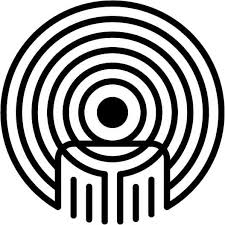

Mizizi Afriqa is an award winning missionary art movment that addresses societal issues from their Rroots, speaking the unspoken for the voiceless and giving power to masses in form of knowledge and information.
We aim to be patrons of change, fusing various arts to give birth to it's life. We do this mainly through group poetry accompanied by a live band.
The group, based in Nairobi, has been in existence for the past three years performing in different platforms and spaces that give room for reasoning and concious awareness on societal matters thus helping to invoke progressive dialogues.
Our Mission
"To address societal issues from the roots, invoke social change and trigger call to action."
The Vision
"To be Patrons of Change."
Mental 360
Mental 360